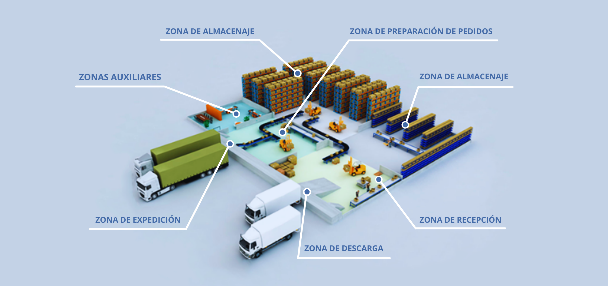

Unidad 1 Introducción
1.2 Conceptos básicos de sistemas
-
Sistema:
Un sistema es un conjunto de elementos interrelacionados que trabajan juntos para lograr un objetivo común. Estos elementos pueden ser personas, objetos, conceptos, procedimientos, software, hardware u otros componentes, dependiendo del tipo de sistema que se esté considerando.
Un sistema se caracteriza por tener una estructura organizada y funciones específicas que le permiten desempeñar una determinada tarea o función. Los sistemas pueden encontrarse en diversos ámbitos, como la informática, la biología, la física, la administración, la ingeniería, entre otros.
Un sistema puede ser abierto o cerrado, dependiendo de si interactúa o no con su entorno. Los sistemas abiertos interactúan con su entorno, recibiendo información, recursos o energía del mismo, y a su vez, generando una salida o resultados que afectan a ese entorno. Por otro lado, los sistemas cerrados operan de manera aislada, sin interacción significativa con su entorno.
Palabras clave: un sistema es un conjunto de elementos que trabajan en conjunto para alcanzar un fin común. -
Estado del sistema: variables de nivel o de estado
En un sistema, el estado se refiere a la condición o configuración en la que se encuentran las variables del sistema en un momento específico. Estas variables de estado son aquellas que describen las características o propiedades del sistema en un determinado instante de tiempo y son fundamentales para comprender y predecir su comportamiento.Las variables de estado pueden variar dependiendo del tipo de sistema que se esté considerando. Por ejemplo, en un sistema de inventario, las variables de estado podrían ser la cantidad de productos en stock, la demanda actual y el nivel de producción. Es importante destacar que el estado de un sistema se puede modificara medida que este evoluciona en el tiempo, a través de la interacción entre sus componentes internos y su entorno. Por lo tanto, para comprender completamente el comportamiento de un sistema, es necesario tener en cuenta el estado actual y cómo cambia a lo largo del tiempo. El estado del sistema puede representarse mediante un conjunto de valores numéricos, un vector de variables o incluso mediante un diagrama de estados. La recopilación y análisis de estos datos de estado es esencial para el estudio de sistemas y puede ser utilizado en la modelización, simulación y control de los mismos.
Palabras clave: el estado de un sistema depende de las variables de estado, y estas a su vez son valores que describen las propiedades (cantidad, nivel, tiempo, etc.) del sistema en un momento dado. Con las variables de estado es que se puede realizar lo modelación. -
Eventos del sistema: variables de flujo del sistema
En un sistema, los eventos son sucesos o acciones que ocurren en un momento específico y que generan cambios en las variables del sistema. Estos eventos pueden ser internos, es decir, generados por los componentes del sistema, o externos, provenientes del entorno en el que el sistema opera.
Las variables de flujo del sistema son aquellas que representan la tasa de cambio de las variables de estado a lo largo del tiempo. Estas variables describen cómo las propiedades del sistema evolucionan o se transforman a medida que ocurren los eventos. Por lo tanto, las variables de flujo están relacionadas con las tasas de entrada, salida y transformación de las variables de estado.
Por ejemplo, en un sistema de producción, una variable de estado podría ser la cantidad de productos en inventario, mientras que una variable de flujo podría ser la tasa de producción, que representa la cantidad de productos fabricados por unidad de tiempo. Otro ejemplo sería en un sistema climático, donde una variable de estado podría ser la temperatura y una variable de flujo sería la velocidad del viento.
Las variables de flujo del sistema son cruciales para comprender cómo se producen los cambios en las variables de estado a través del tiempo. Permiten analizar la dinámica del sistema, entender las relaciones causales entre los eventos y las variables de estado, y modelar su comportamiento en simulaciones o algoritmos de control.
Palabras clave: los eventos son sucesos que generan cambios en el estado de un sistema y este se puede medir con las variables de flujo las cuales nos indican cuánto cambian las variables estado.